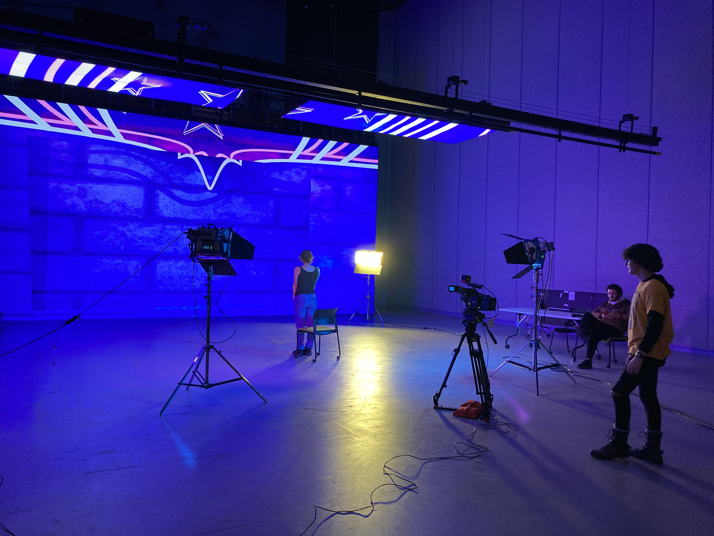
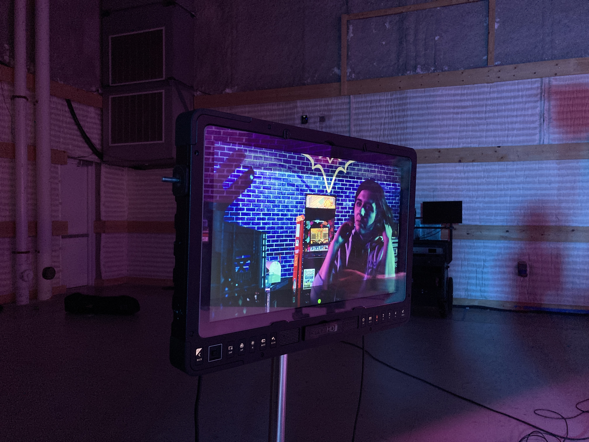
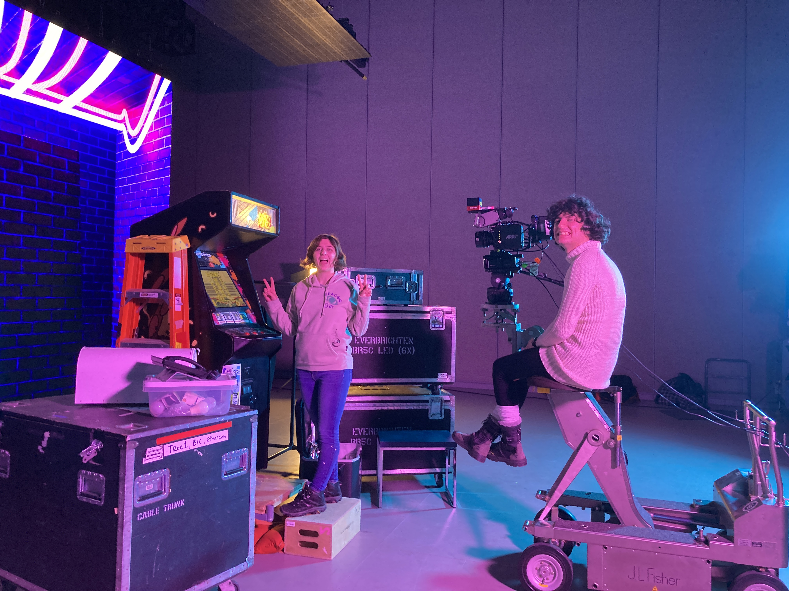

Virtual production!!!! Possibly the coolest class offered at RIT. Last fall, I took VP1, an ambitious class that aims to cover the entire virtual production pipeline, from volume art to LED operation, to short film production. At an introductory level, I learned how to build an environment in Unreal Engine, animate level sequences, manage assets in Perforce, operate the LED volume using Pixera / Unreal / Switchboard, light a scene with an LED wall, and use camera tracking with Mo-Sys.

Basically it was a lot at once! So the final product was kinda silly – more of an exploration of technology than a polished short film. Our team consisted of 4 people with totally different backgrounds. Instead of dividing roles too strictly, we all wanted to try a bit of everything, giving everyone a chance to experiment with different parts of the virtual production workflow. I took on a lead creative role, and worked on the virtual art and post-production color.
Sadly I can't find the final product, so enjoy these BTS pictures from our shoot day in the mean time while I try and scrounge up the fine cut. Stay tuned for Virtual Production 2 :)

